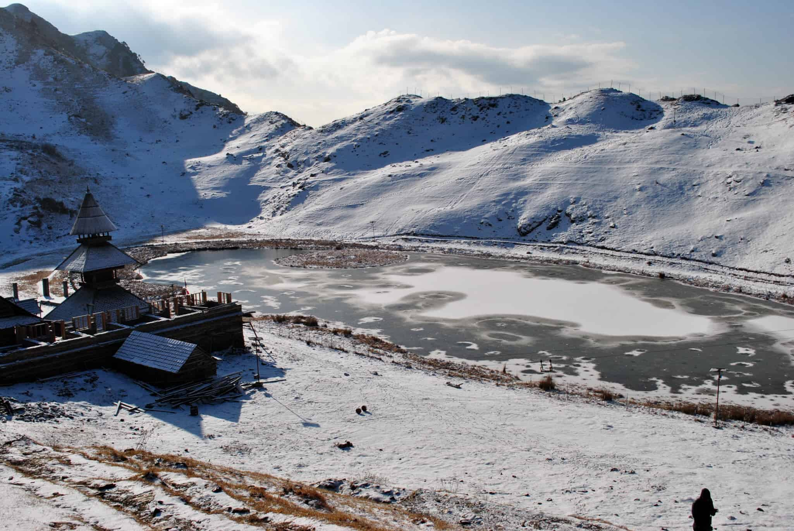

History of Prasher Lake
पराशर झील: झीलों का रहस्यमय स्थान
आज के आधुनिक युग में, विज्ञान की समझ से परे कई प्राचीन प्रमाण होते हैं। ऐसे प्रमाण को केवल दैवीय चमत्कार के रूप में संदर्भित किया जा सकता है और कुछ नहीं। पराशर झील में भी एक ऐसा दैवीय प्रमाण देखा जा सकता है। इस झील के बीच में एक भूभाग है जो दिखता है कि वह अद्भुत तरीके से तैरता हुआ है। पराशर झील मंडी जिले के मुख्यालय से लगभग 56 किलोमीटर की दूरी पर स्थित है और देवता पराशर ऋषि और एक प्राचीन झील का स्थान है। झील पराशर ऋषि के नाम पर है। पुराणों के अनुसार, ऋषि पराशर ने इस स्थान पर ध्यान किया था। पराशर ऋषि का मंदिर 14वीं और 15वीं सदी में मंडी रियासत के राजा बानसेन द्वारा बनवाया गया था, लेकिन झील के बारे में किसी को भी कोई जानकारी नहीं है।
पराशर झील में तैरता भूभाग: दैवीय शक्ति का प्रमाण जिसका रहस्य कोई नहीं जान पाया
माना जाता है कि सृष्टि के निर्माण के समय से ही यह झील मौजूद है। इस झील में पानी का स्रोत और निकास कहां से होता है, यह किसी को नहीं पता है। यह पानी स्थिर भी नहीं है। इस झील में एक भाग है जो कि अद्भुत रूप से तैरता है और इसे दैवीय अद्भुत घटनाओं का प्रमाण माना जाता है। यह भाग भूमि के अनुपात को भी दर्शाता है। इस भाग का स्थान निरंतर बदलता रहता है। पराशर देवता मंदिर के प्रधान बलवीर ठाकुर बताते हैं कि कुछ वर्ष पहले यह भाग सुबह पूर्व की तरफ था और शाम को पश्चिम की तरफ। यह भाग चलता रहता है और रुकता भी है। इस घटना को पुण्य और पाप के साथ जोड़ा जाता है। हालांकि, अब इस भाग का कुछ महीनों के लिए स्थान एक ही रहता है और कुछ समय के बाद फिर से चलने लगता है। झील के पास के कई देवी-देवताओं को इस झील में स्नान करने का बड़ा विश्वास होता है।
झील की गहराई नापने की नकाम कोशिशे
आज तक पाराशर झील की गहराई कोई नहीं नाप सका है, हालांकि यह विज्ञान के अन्वेषण का विषय हो सकती है, लेकिन वैज्ञानिक भी इस स्थान तक पहुंच नहीं पाए हैं। मंदिर समिति के अध्यक्ष बलवीर ठाकुर कहते हैं कि सदियों पहले एक राजा ने रस्सियों से झील की गहराई नापने का प्रयास किया था, लेकिन वह सफल नहीं हुआ था। कुछ दशक पहले एक विदेशी महिला ने ऑक्सीजन सिलेंडर के साथ इस झील में जाने का प्रयास किया था, लेकिन उसके साथ अंग्रेजी में संवाद करने वाला कोई नहीं था, इसलिए नहीं पता चला कि वह झील की कितनी गहराई तक गई थी। झील के अंदर क्या रहस्य है, यह आज भी अनसुलझा है।
मात्र पराशर झील के दर्शन से ही होती हैं मनोकामना पूरी
पराशर ऋषि मंदिर और झील लोगों के लिए बहुत महत्व रखते हैं। मंदिर पगोड़ा शैली में बना हुआ है और इससे एक सुंदर नजारा प्रस्तुत होता है। बलवीर ठाकुर बताते हैं कि मंदिर में मांगी गई हर मनोकामना पूरी होती है। पराशर मंदिर को केवल गर्मियों के मौसम में ही जाया जा सकता है, इसलिए यह वर्तमान में भक्तों से भरा हुआ है। भक्त मनोज सूद, टिकी देवी, और किरण कुमारी बताते हैं कि मंदिर जाने का सबसे उचित समय गर्मियों का ही होता है, क्योंकि इससे गर्मी से राहत मिलती है, देवता की दर्शन करने के बाद आशीर्वाद प्राप्त होता है और पवित्र झील के पानी को पीने का अवसर भी मिलता है। पराशर ऋषि को मंडी रियासत के राजवंश का विशेष देवता माना जाता है।
वर्षा न हो तो ऋषि पराशर बुलाते हैं गणेश जी को
विश्वास किया जाता है कि इस क्षेत्र में अगर वर्षा नहीं होती है, तो ऋषि पराशर की प्राचीन परंपरा के अनुसार भगवान गणेश को आमंत्रित किया जाता है। भगवान गणेश एक स्थान पर स्थित हैं जिसे भटवाड़ी कहा जाता है, जो पराशर ऋषि मंदिर से कुछ ही किलोमीटर दूर है। यह उल्लेखनीय है कि राजा के समय में भगवान गणेश को बुलाने की यह प्रार्थना भी की जाती थी। आज भी, सैकड़ों सालों बाद भी इस परंपरा को अपनाया जाता है।
इन अवसरों पर लगता है यहां मेला
प्रत्येक वर्ष, आषाढ़ी संक्रांति और भाद्रपद की कृष्णपक्ष पंचमी के मौके पर पराशर झील के पास एक मेला आयोजित होता है। बताया जाता है कि भाद्रपद में मनाए जाने वाले मेले को ऋषि पराशर के जन्म दिवस के रूप में मनाया जाता है। पराशर स्थल से कुछ किलोमीटर दूर ग्राम बांधी में ऋषि पराशर का भंडार है।
पराशर झील के पास स्थापित मंदिर में ही ऋषि पराशर करते थे तपस्या
कहा जाता है कि पराशर झील के पास स्थापित मंदिर में ही ऋषि पराशर तपस्या करते थे। यह मंदिर मंडी रियासत के राजा बाणसेन द्वारा बनाया गया था। रोचक बात यह है कि कुछ साल पहले इस झील के पास एक बहुत बड़ा पेड़ था, जो उखाड़े बिना काटा जा सकता था, लेकिन इसका टुकड़ा काटा और इस मंदिर के निर्माण में उपयोग किया गया। क्या यह न केवल आश्चर्यजनक बल्कि दिलचस्प भी नहीं है? इस तिमाही में बने इस पिरामिडल मंदिर की महिमा उदाहरण है। कला और संस्कृति के प्रशंसक अक्सर मंदिर के परिसर में जाते हैं। ठंड की मौसम में जब यहाँ बर्फ गिरती है, तब झील और इसके आसपास का नज़ारा ऐसा होता है कि आप उस दृश्य से अपनी नज़रें नहीं हटा सकते। दुनिया की सारी भीड़-भाड़ से दूर, एक झील और उसके किनारे एक मंदिर ऐसा लगता है कि आप अपने सपनों के शहर में खड़े होकर भगवान के घर के द्वार पर हैं।

पराशर झील कैसे पहुंचे ?
झील की प्राकृतिक सौंदर्यता अभी भी बरकरार है। आप मंडी से कटोला जाकर बागी तक पहुँच सकते हैं और फिर सिर्फ़ 8 किलोमीटर की ट्रेकिंग करके पराशर झील तक पहुँच सकते हैं। यहाँ से झील तक जाने के लिए एक सड़क मार्ग भी है जो बागी से 18 किलोमीटर दूर है। इस सड़क पर आपको बस सुविधा मिलेगी जो आपको झील से लगभग 1 किलोमीटर पहले तक ले जाएगी। इसके बाद, आप आसानी से झील तक पैदल चल सकते हैं। दिल्ली से मंडी तक हर दिन बस सुविधाएं उपलब्ध हैं। अपने दोस्तों या परिवार के साथ जाएं और स्वर्ग के आनंद का अनुभव करें, क्योंकि आप इस झील को साल या महीने के किसी भी समय देख सकते हैं। अपने पूरे व्यक्तित्व के साथ इस अकेलापन भरे सौंदर्य का अनुभव करें।